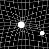
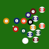
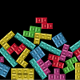
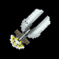
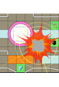
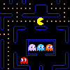
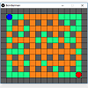

back
Game Development

This is a little tennis arcade game with a twist: Instead of a paddle, you have the force of gravity.
Play it online at Kongregate.

This is simple 2D Pool table made with C, SDL and Chipmunk physics.
Features free play, Straight Pool and 8-Ball. Also a Newton's Cradle in the main menu as a bonus.
Download it for free at Itch.io.

A quick project to experiment with the excellent Chipmunk physics Library.
Check out the repository, download the playable version or check this clip!
Created in C with SDL.

Astro is a prototype top-down spaceship flying game in the vein of Starfight or Star Control. In its current state
it features procedural star system generation, space stations in orbit throughtout the system, and a fairly robust
gravity simulation. I've also mocked up some GUI instruments to help the player achieve a stable orbit.

The purpose of this project was to demonstrate various aptitutes including:
- Utilization of a third-party library, Fisica which simulates the physics, including collisions, friction and forces.
- Implementation of a system of items which can be acquired and deployed by players, demonstrating inheritance and polymorphism.
- Modularity and File I/O with a fully-featured map designer built-in and the ability to save and load maps.

this was a fully-featured, (practically) pixel-perfect clone of Pac-Man in Processing.
intended for a workshop on artificial intelligence at Garoa Hacker Clube, on September 25, 2018.
We successfully developed a working AI for the ghosts using the A* algorythm!

This is a Bomberman clone developed from scratch in about 3 hours in Processing
during a February 27, 2018 workshop at Garoa Hacker Clube On arcade game development.
The atendees voted for Bomberman, and we managed to end up with a functional game featuring local multiplayer!

This is a little top-down spaceship game also developed from scratch in about 3 hours in Processing during the
gamedev workshop at the Processing Community Day São Paulo 2019. We all agreed to go for a very loose sort of game.
We were pretty satisfied to fly around exploring the planets and trying to acheive orbits around them.

Other prototypes and mock-ups.
back
{kind=link}